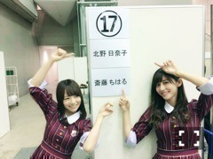
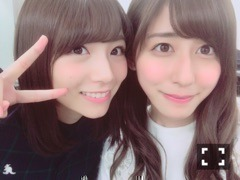
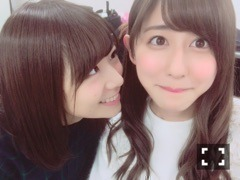

| 2016/11 23 Wed | 17づくし。 |
ちはるーむへようこそ！
16th全国握手会。

今日は北野と一緒に
17レーンでの握手でした！
きいは7月17日が誕生日で
私は2月17日が誕生日。
そんな2人が17レーンという17づくしの日◎


じーっと見られる私。
同学年レーンは
自由な感じで楽しめました！
きいは本当自由人だった笑
こんなに自由なペアは初めてでした笑
そして今日はこんな話題をメインに
お話ししました！
・アンダーライブについて
・ミニライブについて
・ブランコMVについて
・学校について
・同学年について
・アメフトについて
・ファッションについて
・父の記事について
・ブログに書いた話題について
とても短い時間だったけど
ちゃんと話せて良かったな◎
でも数名の方が握手会の
仕組みがわかっていないのか
握手したくなかったのか分かりませんが
スーッと握手せず帰っていってしまって
悲しい気持ちになったので
どうにか改善されないかな〜とも感じました。
私のために長い列に並んでくださったり
長時間待ってくださった方、
本当にありがとうございますヽ(；；)丿
会いにきてくださる事が
本当に嬉しいです。
直接お話しできる事は
私にとって大切な時間です。
また沢山会えたらいいな！
もっとゆっくり喋りたいな〜って方は
是非個別にも足を運んでみてください♪
首をながーくして待ってます◎
北野ファンの方！
きいに似て賑やかな方が多かったな。
楽しい時間をありがとうございました！

-------------------------♡
♬ ChihaMusic
「スノーマジックファンタジー」SEKAI NO OWARIさん
明日関東に雪が降るみたいなので
雪についての曲が聴きたくなって
この曲にしました。
寒くて辛い雪かもしれないけど
雪の妖精のための雪って考えたら
ファンタジックで私は楽しくなれる。
何事もプラスにね◎
"やがて、僕は眠くなってきた
君と一緒にいるということは、
やはりこういう事だったんだろう。
でも良いんだ、君に出逢えて
初めて誰かを愛せたんだ
これが僕のハッピーエンド"
妖精が運んできたのは
幸せだけではなかったけど
彼にとっては幸せそのものだったのかな、
と想像すると少し切ない。
ファンタジーな世界観が大好き！
今日のお風呂はいつもよりも
温かく感じたよ。
それだけ冬が近付いてるって事だね。
寒いけど、それでも
私は冬が好きだよ。
おやすみ〜
斎藤ちはる
コメント(379)
2016/11/23 23:54